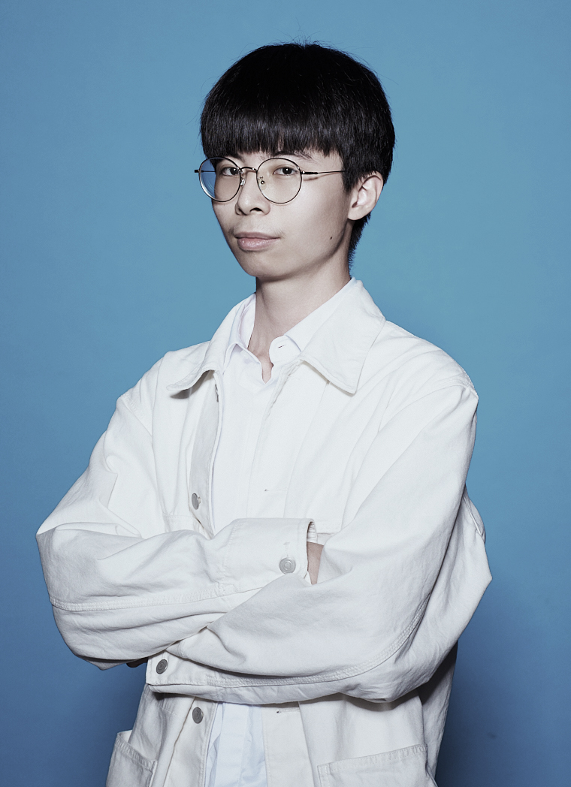

BACK
Scramble
打亂
00:00:00
Start the timer
Reset
選單
個人履歷
平面設計
3D作品
實務專案
此網頁製作

LiYue
李岳
Phone . LINE ID
0979278549
Gmail
asergr4068@gmail.com
Graphic Design
3D Works
Practical Projects
This webpage
LIYUE's portfolio
Start
Personal
resume
個人履歷
Graphic
Design
平面設計
3D Works
3D 作品
Practical
Projects
實務專案
This webpage
was created
此網頁製作